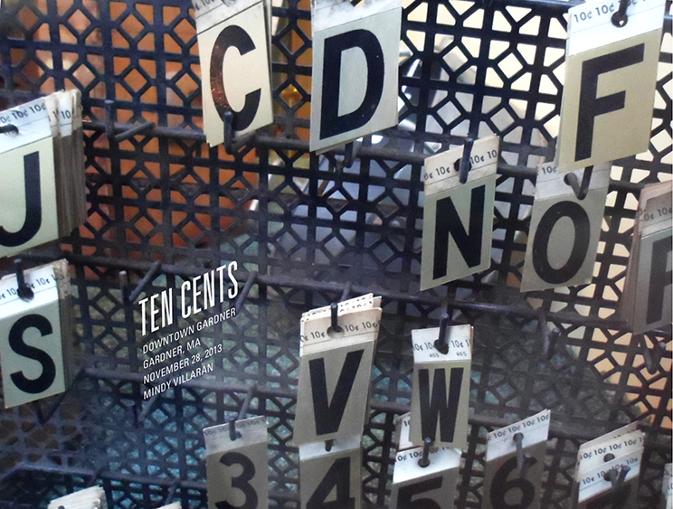
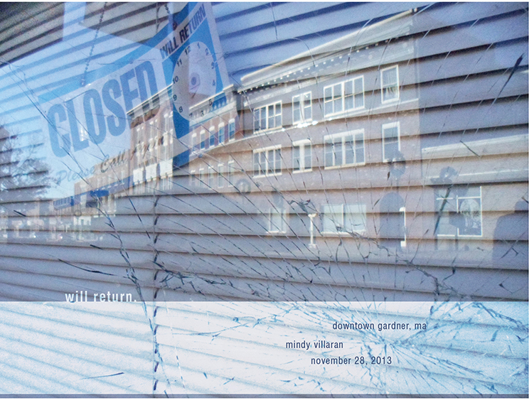
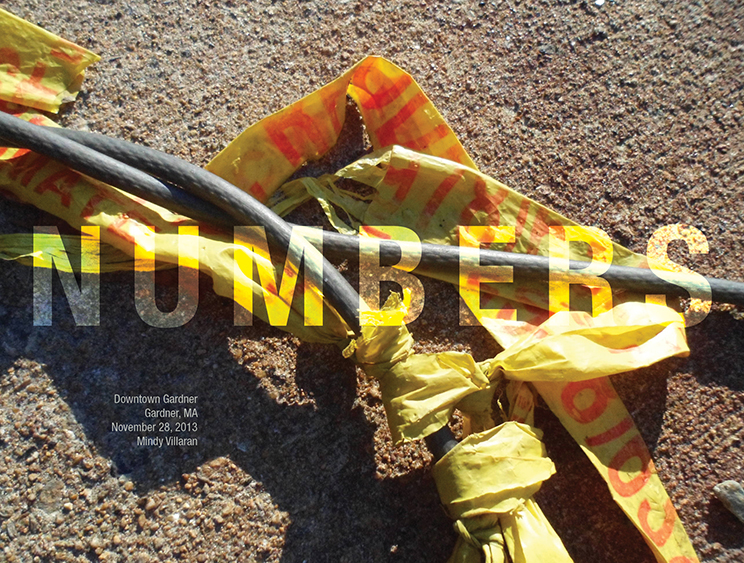
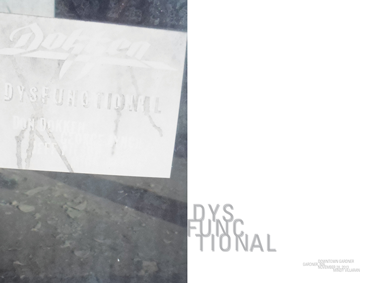

Type and Image Spreads
A series of four individual spreads. Each had to include photography of typography, as well as added type detailing the photo's title, location, date, and creator. I was inpsired by found typography in Downtown Gardner, Massachusetts, and chose to photograph that for this series.
A project for Typography I at MassArt.